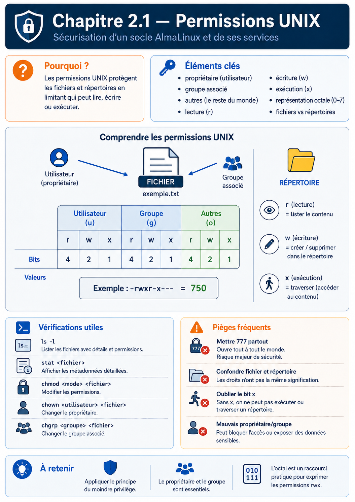

Chapitre 2.1 — Les permissions UNIX
Campagne 2 — Contrôle des accès
« La sécurité ne consiste pas à empêcher les utilisateurs de travailler. Elle consiste à leur permettre de faire exactement ce qu'ils doivent faire... et rien de plus. »
Vous êtes ici
PARTIE I — Construire un socle sécurisé
Campagne 1 [██████████] ✔
Campagne 2 [█░░░░░░░░░]
► 2.1 Les permissions UNIX
2.2 ACL
2.3 umask
2.4 Attributs étendus
2.5 PAM
2.6 Politique de mots de passe
2.7 Comptes système
2.8 sudo avancé
2.9 passwd / shadow / group
2.10 Synthèse
Objectifs pédagogiques
À la fin de ce chapitre, vous serez capable de :
- comprendre le modèle historique des permissions UNIX ;
- expliquer pourquoi il est toujours utilisé cinquante ans après sa création ;
- interpréter correctement les droits d'un fichier ;
- différencier lecture, écriture et exécution ;
- comprendre les notions de propriétaire, groupe et autres utilisateurs ;
- analyser les décisions prises par le noyau lors d'un accès à un fichier ;
- identifier les limites du modèle UNIX classique.
Pourquoi ce chapitre existe
Lorsqu'un administrateur découvre Linux, il rencontre très rapidement une commande devenue presque mythique :
ls -l
Son résultat ressemble souvent à ceci : -rwxr-x--- Pour beaucoup de débutants, cette suite de lettres paraît mystérieuse. On apprend rapidement que :
rsignifie Read ;wsignifie Write ;xsignifie eXecute.
Puis on mémorise quelques commandes :
chmod
chown
chgrp
Et l'on considère le sujet comme acquis. En réalité, ce n'est que la partie visible. Ces quelques caractères représentent le socle du contrôle d'accès discrétionnaire Linux. Chaque ouverture, création, parcours ou exécution est soumise au noyau, qui tient compte du mode, des éventuelles ACL, de l'identité du processus et de ses capacités. Une politique SELinux peut ensuite imposer une restriction supplémentaire. Comprendre le mode UNIX reste donc indispensable, sans imaginer qu'il décide seul de tous les accès.
Une idée étonnamment simple
L'histoire des permissions UNIX commence au début des années 1970. À cette époque, les ordinateurs sont extrêmement coûteux. Ils sont partagés. Des dizaines, parfois des centaines d'utilisateurs utilisent simultanément la même machine. Un problème apparaît immédiatement. Comment empêcher un utilisateur de modifier les fichiers d'un autre ? Comment protéger le système ? Comment éviter les erreurs accidentelles ? Les concepteurs d'UNIX imaginent alors une idée très simple. Chaque fichier appartiendra à quelqu'un.
Chaque fichier pourra éventuellement être partagé avec un groupe. Et tout le reste du monde aura un troisième niveau de droits. Autrement dit :
Trois catégories. Pas davantage. Cette simplicité est volontaire. Elle permet au noyau de prendre une décision extrêmement rapidement. Même aujourd'hui, ce mécanisme reste incroyablement performant.
Trois acteurs seulement
Chaque fichier Linux possède exactement un propriétaire. Par exemple : sentinel.conf peut appartenir à : sentinel Le même fichier possède également un groupe. Par exemple : sentinel-admin Enfin, tous les autres utilisateurs appartiennent automatiquement à une troisième catégorie. Ils ne sont :
- ni propriétaires ;
- ni membres du groupe.
Ils deviennent donc simplement : others ou parfois : world Le noyau ne cherche pas plus loin. Il ne regarde pas :
- le prénom de l'utilisateur ;
- son service ;
- son ancienneté ;
- son métier.
Il applique simplement un ordre de priorité.
Cette règle paraît presque naïve. Pourtant, elle fonctionne depuis plus de cinquante ans.
Les trois autorisations
Pour chacune de ces trois catégories, Linux peut accorder trois permissions. Lecture. Écriture. Exécution. Ces trois permissions sont indépendantes. Un utilisateur peut :
- lire sans écrire ;
- écrire sans exécuter ;
- exécuter sans modifier.
Chaque combinaison est possible.
Le droit de lecture
Le droit de lecture est représenté par : r Il autorise l'ouverture du contenu. Pour un fichier texte : cat notes.txt fonctionnera. Sans ce droit : Permission denied Pour un fichier binaire, la lecture signifie simplement que son contenu peut être consulté. Le noyau ne fait aucune différence. Pour lui, un fichier reste une suite d'octets.
Le droit d'écriture
Le droit : w autorise la modification. On peut :
- remplacer le contenu ;
- ajouter des données ;
- tronquer le fichier.
Sans ce droit, toute tentative de modification sera refusée.
Le droit d'exécution
Le droit : x est probablement celui qui intrigue le plus. Beaucoup pensent qu'il signifie :
"ce fichier est un programme."
En réalité, ce n'est pas exact. Le bit x indique simplement :
"le noyau est autorisé à essayer d'exécuter ce fichier."
Il ne garantit absolument pas que l'exécution réussira. Par exemple :
chmod +x montexte.txt
ne transforme évidemment pas un fichier texte en programme. Le noyau essaiera simplement de l'exécuter. L'opération échouera ensuite car le contenu ne correspond pas à un format exécutable ou à un script valide. Le bit x ouvre seulement la porte. Il ne garantit pas ce qui se trouve derrière.
Les neuf permissions
Nous pouvons maintenant comprendre l'écriture classique. Prenons : -rwxr-x--- Découpons-la. rwx r-x --- Les trois premiers caractères concernent : Owner Les trois suivants : Group Les trois derniers : Others Chaque bloc possède toujours le même ordre. r w x Jamais : x r w Jamais : w x r Toujours :
Lecture
Écriture
Exécution
Le cerveau finit par reconnaître ces motifs presque instantanément. Avec un peu d'expérience, un administrateur lit une permission comme il lit un mot. Il ne décode plus caractère par caractère.
Comprendre le premier caractère
Lorsque nous exécutons :
ls -l
nous obtenons généralement un résultat semblable à celui-ci : -rwxr-x--- Beaucoup de personnes commencent immédiatement à lire les neuf derniers caractères. Pourtant, un administrateur expérimenté regarde presque toujours le premier caractère. Pourquoi ? Parce qu'il indique immédiatement la nature de l'objet. Les permissions n'ont pas exactement la même signification selon que l'on manipule un fichier, un répertoire ou un lien symbolique. Observons plusieurs exemples. -rw-r--r--
Le premier caractère est : - Il s'agit d'un fichier classique. En revanche : drwxr-xr-x commence par : d Nous sommes face à un répertoire. Autre exemple : lrwxrwxrwx Le caractère : l désigne un lien symbolique. Il existe également d'autres types moins courants :
| Caractère | Type |
|---|---|
- |
Fichier ordinaire |
d |
Répertoire |
l |
Lien symbolique |
c |
Périphérique caractère |
b |
Périphérique bloc |
s |
Socket UNIX |
p |
FIFO (tube nommé) |
Nous retrouverons certains de ces objets dans les prochains chapitres, notamment lorsque nous étudierons systemd, les sockets ou encore Podman.
Les permissions ne signifient pas toujours la même chose
Voici un point qui surprend souvent. Les permissions ont une signification différente selon le type d'objet. Prenons un fichier. -rw------- Le droit de lecture permet évidemment de lire son contenu. Le droit d'écriture autorise sa modification. Le droit d'exécution permet de tenter son exécution. Jusqu'ici, tout paraît logique. Mais observons maintenant un répertoire. drwx------ Que signifie ici le droit de lecture ? Peut-on "lire" un répertoire ? En réalité, un répertoire n'est pas un conteneur magique.
Sous Linux, c'est lui aussi un fichier. Simplement, son contenu n'est pas constitué de texte. Il contient une table associant des noms à des numéros d'inodes. Les permissions prennent donc un sens légèrement différent.
| Permission | Fichier | Répertoire |
|---|---|---|
Lecture (r) |
Lire le contenu | Lister les entrées |
Écriture (w) |
Modifier le contenu | Créer ou supprimer des entrées |
Exécution (x) |
Exécuter le fichier | Traverser le répertoire |
Ce dernier point mérite que l'on s'y attarde.
Le mystérieux bit d'exécution des répertoires
Pourquoi un répertoire possède-t-il un droit d'exécution ? La réponse est historique. Dans UNIX, pénétrer dans un répertoire revient à le parcourir. Le bit x est donc parfois appelé :
search permission
ou
traverse permission.
Autrement dit :
"Avez-vous le droit d'utiliser ce répertoire comme étape de votre chemin ?"
Imaginons l'arborescence suivante.
/home
|
+-- alice
|
+-- secrets.txt
Pour accéder au fichier : /home/alice/secrets.txt le noyau doit parcourir plusieurs répertoires.
Si l'un des répertoires refuse le droit de traversée, le noyau s'arrête immédiatement. Peu importe que le fichier lui-même soit parfaitement accessible. Le chemin est bloqué.
Lire sans entrer
Ce comportement peut sembler étrange. Prenons un exemple. dr--r--r-- Le répertoire est lisible. Mais il n'est pas exécutable. Que peut faire un utilisateur ? Il peut connaître la liste des fichiers. Par exemple :
ls monrepertoire
peut fonctionner. En revanche :
cd monrepertoire
échouera. Pourquoi ? Parce que changer de répertoire nécessite de le traverser. Autrement dit : Lecture ≠ Traversée Inversement, un utilisateur peut parfois posséder uniquement : --x Dans ce cas, il ne peut pas obtenir la liste complète des fichiers. Mais il peut accéder directement à un fichier dont il connaît déjà le nom. Cette situation est relativement rare, mais elle existe dans certaines architectures de sécurité.
Écrire dans un répertoire
Le droit d'écriture d'un répertoire est lui aussi souvent mal compris. Beaucoup imaginent qu'il permet de modifier les fichiers contenus dans ce répertoire. Ce n'est pas vrai. Le droit d'écriture concerne le répertoire lui-même. Autrement dit, il autorise des opérations sur les entrées qu'il contient. Par exemple :
- créer un nouveau fichier ;
- supprimer un fichier ;
- renommer un fichier ;
- créer un sous-répertoire.
En revanche, modifier le contenu d'un fichier dépend des permissions de ce fichier. Prenons un exemple. documents/ possède : drwx------ À l'intérieur : rapport.txt possède : -r-------- Le propriétaire du répertoire pourra créer : notes.txt ou supprimer : rapport.txt Mais il ne pourra pas forcément modifier le contenu de rapport.txt si les permissions de ce dernier ne l'y autorisent pas. Le répertoire contrôle la présence des objets. Le fichier contrôle son contenu.
Ce sont deux responsabilités différentes.
Culture technique
Le modèle des permissions UNIX est apparu au début des années 1970. À cette époque, la mémoire se comptait en kilo-octets. Les processeurs fonctionnaient à quelques mégahertz. Chaque instruction coûtait cher. Les concepteurs d'UNIX avaient donc un objectif clair :
décider très rapidement si un accès est autorisé.
Le choix de trois catégories seulement n'était pas un hasard. Il permettait une évaluation extrêmement rapide. Même aujourd'hui, le noyau Linux peut déterminer les permissions d'un fichier en quelques opérations très simples. Cette efficacité explique pourquoi ce modèle est toujours utilisé plus de cinquante ans plus tard. En revanche, les besoins de sécurité ont considérablement évolué. Aujourd'hui, une entreprise souhaite souvent exprimer des politiques beaucoup plus fines. Par exemple :
- un groupe peut modifier un fichier mais pas le supprimer ;
- un utilisateur externe peut uniquement consulter certains documents ;
- une application peut accéder à un répertoire sans appartenir au groupe propriétaire.
Le modèle UNIX classique devient alors insuffisant. C'est précisément pour répondre à ces besoins que les ACL, étudiées au chapitre suivant, ont été introduites.
Piège classique
Le piège le plus fréquent consiste à croire que les permissions visibles dans ls -l racontent toute l'histoire. Prenons un exemple. -rw------- À première vue, le fichier semble parfaitement protégé. Pourtant, plusieurs éléments peuvent encore influencer l'accès :
- les ACL ;
- SELinux ;
- les capacités Linux ;
- le montage du système de fichiers ;
- les espaces de noms (namespaces) d'un conteneur ;
- certains mécanismes propres à systemd.
Autrement dit, le mode UNIX constitue la couche de base, mais il ne travaille pas seul. Une ACL POSIX affine la décision discrétionnaire et peut accorder un droit à une identité nommée dans la limite de son masque. SELinux ajoute un contrôle obligatoire qui peut refuser un accès accepté par la couche discrétionnaire, mais ne transforme pas à lui seul un refus DAC en autorisation. Enfin, certaines capacités, comme CAP_DAC_OVERRIDE, permettent à un processus privilégié de contourner une partie des contrôles DAC. Au fil de la formation, nous apprendrons à diagnostiquer ces couches sans les confondre.
TP 1 — Expérimenter sur AlmaLinux
Il est temps d'observer concrètement les permissions UNIX. Connectez-vous à votre machine AlmaLinux. Créez un espace de travail.
mkdir ~/permissions-demo
Déplacez-vous dans ce répertoire.
cd ~/permissions-demo
Créons quelques fichiers.
touch rapport.txt
touch script.sh
touch secret.key
Affichons leurs permissions.
ls -l
Vous devriez obtenir un résultat proche de celui-ci :
-rw-r--r-- rapport.txt
-rw-r--r-- script.sh
-rw-r--r-- secret.key
Observons maintenant les répertoires.
mkdir sauvegardes
mkdir archives
Puis :
ls -ld sauvegardes archives
Vous verrez quelque chose de similaire à : drwxr-xr-x Prenez quelques minutes pour identifier :
- le premier caractère ;
- les trois blocs de permissions ;
- les différences entre fichiers et répertoires.
L'objectif n'est pas encore de modifier les droits. Il est simplement d'apprendre à les lire rapidement.
Lire les permissions comme un administrateur
Un administrateur expérimenté ne lit généralement pas les permissions caractère par caractère. Il reconnaît immédiatement certains profils. Par exemple : -rw-r--r-- évoque instantanément :
fichier de données classique.
À l'inverse : -rwxr-xr-x fait immédiatement penser à :
programme exécutable.
De même : drwx------ suggère :
répertoire privé.
Avec l'expérience, cette lecture devient instinctive. On ne traduit plus mentalement chaque lettre. On identifie directement une politique de sécurité. C'est exactement cette capacité que nous allons développer tout au long de cette campagne.
Le rôle du noyau dans la décision
Une question revient souvent chez les administrateurs qui découvrent Linux.
« Qui décide réellement si un accès est autorisé ? »
La réponse est simple. Ce n'est pas la commande cat. Ce n'est pas vim. Ce n'est pas Python. Ce n'est pas Sentinel. C'est toujours le noyau Linux. Les applications ne peuvent pas décider elles-mêmes qu'un accès est autorisé. Elles peuvent uniquement le demander. À chaque tentative d'ouverture d'un fichier, un dialogue s'engage entre le programme et le noyau.
Le noyau est le seul composant capable de rendre cette décision. Même si une application contient une erreur, elle ne peut pas contourner ce mécanisme par elle-même. C'est l'une des raisons qui font de Linux un système particulièrement robuste. Les contrôles sont réalisés au plus bas niveau du système.
Les identités utilisées par le noyau
Lorsque le noyau doit prendre une décision, il ne connaît pas votre prénom. Il ne connaît pas non plus votre nom d'utilisateur sous forme de texte. En réalité, il manipule principalement des identifiants numériques. Chaque utilisateur possède un :
- UID (User Identifier).
Chaque groupe possède un :
- GID (Group Identifier).
Par exemple :
Utilisateur : sentinel
UID : 1001
Groupe : sentinel
GID : 1001
Lorsqu'un processus tente d'accéder à un fichier, le noyau compare des nombres. Le raisonnement est proche de celui-ci :
Si la réponse est négative, il examine ensuite les groupes auxquels appartient le processus. Enfin, si aucune correspondance n'est trouvée, il applique les permissions destinées aux autres utilisateurs. Cette approche est extrêmement rapide. Comparer des entiers est bien plus efficace que comparer des chaînes de caractères. C'est une des nombreuses optimisations héritées des premières versions d'UNIX.
Les groupes : une simplification essentielle
Imaginons une entreprise de cinquante administrateurs système. Sans groupes, chaque fichier devrait référencer individuellement les cinquante utilisateurs autorisés. La gestion deviendrait rapidement impossible. Les groupes résolvent ce problème. Au lieu d'autoriser chaque personne séparément, on crée un groupe. admins Tous les administrateurs rejoignent ce groupe. Le fichier est ensuite associé à ce groupe.
Désormais, lorsqu'un nouvel administrateur arrive dans l'équipe, il suffit de l'ajouter au groupe. Les permissions du fichier restent inchangées. Cette idée paraît évidente aujourd'hui. Elle était pourtant révolutionnaire lors de la conception d'UNIX.
Une seule catégorie est utilisée
Un point est souvent mal compris. Supposons le fichier suivant. -rwxr----- Son propriétaire est : alice Son groupe est : admins Alice appartient également au groupe admins. Quels droits seront utilisés ? Les deux ? Non. Le noyau ne mélange jamais les catégories. Il applique la première catégorie qui correspond. L'ordre est toujours le même.
Dans notre exemple, Alice est propriétaire. Le noyau n'examine donc jamais les permissions du groupe. Même si celles-ci étaient plus permissives. Même si elles étaient plus restrictives. La première correspondance met fin à l'évaluation. Cette règle explique de nombreux comportements qui surprennent les débutants.
Pourquoi les permissions sont-elles stockées dans l'inode ?
Jusqu'à présent, nous avons parlé des fichiers comme s'ils contenaient directement leurs permissions. En réalité, ce n'est pas exactement le cas. Sous Linux, un nom de fichier est essentiellement une entrée dans un répertoire. Les véritables informations sont stockées dans une structure appelée inode. L'inode contient notamment :
- le propriétaire ;
- le groupe ;
- les permissions ;
- la taille ;
- les dates importantes ;
- les pointeurs vers les blocs de données.
Le nom du fichier, lui, est stocké dans le répertoire. Cette séparation est fondamentale. Elle explique notamment pourquoi plusieurs noms peuvent désigner le même fichier grâce aux liens physiques (hard links), un sujet que nous aborderons plus tard. On peut résumer cette organisation ainsi :
Lorsque le noyau reçoit une demande d'accès, il ne regarde pas d'abord le contenu du fichier. Il consulte l'inode, car c'est lui qui contient les métadonnées nécessaires à la décision.
Culture technique
Le modèle UNIX repose sur une idée très différente de celle utilisée dans de nombreux systèmes modernes. Sous Linux, on commence par définir :
- un propriétaire ;
- un groupe ;
- des permissions.
Dans d'autres environnements, notamment ceux inspirés des systèmes Windows d'entreprise, l'approche est souvent inverse. On définit directement une liste détaillée des personnes ou des groupes autorisés. Cette différence explique pourquoi les ACL (Access Control Lists) ont été introduites dans Linux. Elles permettent d'ajouter une granularité plus fine sans remettre en cause le modèle historique. C'est précisément l'objet du chapitre suivant.
Vous comprendrez alors pourquoi les permissions UNIX restent le socle de la sécurité, même lorsqu'elles ne suffisent plus à exprimer toutes les politiques d'accès souhaitées.
Piège classique
L'erreur la plus fréquente consiste à utiliser systématiquement :
chmod 777
lorsqu'un problème de permission apparaît. Cette pratique est extrêmement dangereuse. Pourquoi ? Parce qu'elle ne résout pas réellement le problème. Elle le masque. Donner tous les droits à tout le monde revient à supprimer une partie de la politique de sécurité. Imaginez une porte blindée dont la serrure refuse de s'ouvrir. La solution n'est pas de retirer la porte. Pourtant, c'est exactement ce que représente souvent un :
chmod -R 777
Un bon administrateur cherche toujours pourquoi un accès est refusé. Il ne cherche pas à supprimer les contrôles.
TP 2 — Expérimenter sur AlmaLinux
Nous allons maintenant expérimenter le fonctionnement des permissions. Créons un nouvel utilisateur de test.
sudo useradd labo
Créons ensuite un répertoire de démonstration.
mkdir ~/demo-permissions
Créons un fichier.
touch ~/demo-permissions/document.txt
Affichons ses permissions.
ls -l ~/demo-permissions
Essayons maintenant plusieurs modifications. Retirer le droit de lecture :
chmod u-r document.txt
Retirer le droit d'écriture :
chmod u-w document.txt
Ajouter le droit d'exécution :
chmod u+x document.txt
Après chaque commande, exécutez :
ls -l
Observez comment les caractères changent. L'objectif n'est pas encore de mémoriser la syntaxe complète de chmod. Nous voulons simplement comprendre que chaque caractère représente une décision du noyau.
Première lecture d'un résultat ls -l
Prenons un exemple plus réaliste. -rwxr-x--- Un administrateur expérimenté lit cette ligne presque instantanément. Il procède mentalement dans cet ordre :
- Premier caractère.
- Il s'agit d'un fichier.
- Bloc propriétaire.
rwx Le propriétaire peut :
- lire ;
- modifier ;
-
exécuter.
-
Bloc groupe.
r-x Le groupe peut :
- lire ;
- exécuter ;
-
mais pas modifier.
-
Bloc autres.
--- Les autres utilisateurs n'ont absolument aucun droit. En quelques secondes, il est déjà capable de répondre à plusieurs questions importantes. Qui peut modifier ce fichier ? Qui peut simplement le consulter ? Qui en est totalement exclu ? Avec l'habitude, cette analyse devient instinctive. C'est une compétence fondamentale pour tout administrateur Linux.
Les bits spéciaux : setuid, setgid et sticky bit
Les neuf bits rwx ne sont pas les seuls bits de mode. Un quatrième chiffre octal peut activer trois comportements historiques : 4 pour setuid, 2 pour setgid et 1 pour le sticky bit.
| Bit | Sur un exécutable | Sur un répertoire |
|---|---|---|
setuid (4) |
le processus reçoit l'UID effectif du propriétaire | généralement sans usage portable |
setgid (2) |
le processus reçoit le GID effectif du groupe | les nouveaux objets héritent du groupe du répertoire |
sticky (1) |
héritage historique, sans usage courant | seuls le propriétaire du fichier, celui du répertoire ou un processus privilégié peut supprimer ou renommer l'entrée |
Le répertoire partagé /tmp illustre le sticky bit : il est inscriptible par plusieurs utilisateurs, mais chacun ne peut pas supprimer les fichiers des autres. Le bit setgid est utile dans un répertoire de projet : il maintient un groupe commun sans dépendre du groupe principal de chaque créateur.
mkdir partage
sudo chgrp sentinel-admin partage
chmod 2770 partage
stat -c '%A %a %U %G' partage
Dans l'affichage symbolique, s, S, t ou T remplacent parfois le caractère d'exécution. La minuscule indique que x est également présent ; la majuscule signale un bit spécial posé sans exécution correspondante, situation qui mérite souvent une vérification. Un binaire setuid, surtout setuid root, augmente fortement l'impact d'une faille : il doit rester rare, fourni par une source maîtrisée et régulièrement inventorié.
find / -xdev -type f -perm /6000 -print 2>/dev/null
Enfin, chmod accepte deux formalismes complémentaires. Le mode octal (chmod 0640 fichier) fixe un état complet ; le mode symbolique (chmod g+r,o-rwx fichier) exprime une modification relative. Pour une automatisation, le premier facilite la comparaison avec un état attendu. Pour une intervention ciblée, le second rend souvent l'intention plus lisible.
Mission d'ingénieur — Définir les modes de Sentinel
Produisez une matrice pour le binaire, la configuration, les secrets, les journaux et les données de Sentinel. Indiquez pour chaque objet son propriétaire, son groupe, son mode octal, les opérations attendues du service et des opérateurs, puis une commande de vérification. Justifiez tout bit d'écriture accordé à un groupe et tout bit spécial ; l'absence de justification est un défaut de conception.
Impact sur Sentinel
Notre application Sentinel va progressivement devenir un véritable service système. Elle manipulera notamment :
- des fichiers de configuration ;
- des certificats TLS ;
- des journaux ;
- des bases de données locales ;
- des scripts de maintenance.
Tous ces éléments devront recevoir des permissions adaptées. Par exemple :
| Élément | Objectif |
|---|---|
| Configuration | Lecture par le service uniquement |
| Clés privées TLS | Accès extrêmement restreint |
| Journaux | Écriture par Sentinel, lecture par les administrateurs |
| Binaires | Lecture et exécution, jamais modifiables par les utilisateurs |
| Données applicatives | Lecture/écriture uniquement par le compte de service |
Nous ne fixerons pas ces permissions au hasard. Elles découleront directement de la politique de sécurité que nous construirons tout au long de cette formation.
Synthèse
- Les permissions UNIX constituent le premier mécanisme de contrôle d'accès utilisé par le noyau Linux.
- Chaque objet possède un propriétaire, un groupe et une catégorie « autres ».
- Trois permissions existent : lecture (
r), écriture (w) et exécution (x). - La signification des permissions dépend du type d'objet, notamment pour les répertoires.
- Le noyau évalue toujours les catégories dans le même ordre : propriétaire, groupe, puis autres.
- Les permissions sont stockées dans l'inode, et non dans le nom du fichier.
- Une politique de permissions cohérente est une composante essentielle de la sécurité d'un système.
Pour aller plus loin
À ce stade, nous maîtrisons le modèle historique des permissions UNIX. Il est simple. Il est rapide. Il est robuste. Mais il possède une faiblesse importante. Imaginons la situation suivante. Le fichier : /opt/sentinel/config.yml appartient à l'utilisateur : sentinel et au groupe : sentinel Ses permissions sont : -rw-r----- Jusqu'ici, tout va bien. Puis une nouvelle demande apparaît.
L'équipe d'exploitation souhaite qu'un utilisateur nommé backup puisse lire uniquement ce fichier, afin de réaliser une sauvegarde. Les permissions UNIX ne permettent pas de répondre simplement à cette demande. Deux possibilités s'offrent à nous. La première consiste à modifier le groupe du fichier. Mais cela risque d'accorder des droits à d'autres utilisateurs qui appartiennent déjà à ce groupe. La seconde consiste à ajouter backup au groupe sentinel. Là encore, cette solution est dangereuse.
Car backup héritera alors des droits sur tous les fichiers associés à ce groupe. Nous aimerions exprimer une règle beaucoup plus précise. Par exemple :
« Seul
backuppeut lire ce fichier, sans modifier les droits de personne d'autre. »
Le modèle UNIX classique ne sait pas faire cela. C'est précisément pour résoudre ce problème qu'ont été créées les ACL (Access Control Lists). Dans le prochain chapitre, nous découvrirons comment Linux est capable d'ajouter des permissions extrêmement fines tout en restant compatible avec le modèle UNIX historique. Les permissions que nous venons d'étudier ne disparaîtront pas. Elles resteront toujours la première couche de contrôle. Les ACL viendront simplement les compléter.
Schéma récapitulatif
